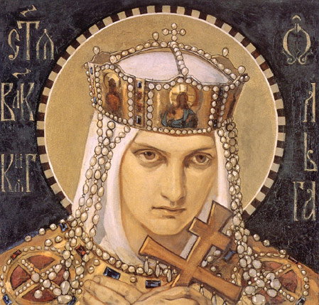

Княгіня Вольга (каля 890 — 969)
Шлях да ўлады
Паходжанне Вольгі дагэтуль ахутана шматлікімі летапіснымі легендамі. Яе шлях да аднаасобнага кіравання пачаўся з трагедыі: у 945 годзе паўстаўшыя драўляне забілі яе мужа, князя Ігара. Застаўшыся з малалетнім сынам Святаславам на руках, Вольга жорстка падавіла бунт, пасля чаго ўзяла ўладу ў свае рукі. У цяжкі час яна паказала сябе як вельмі прагматычны і моцны лідар, здольны ўтрымаць велізарную краіну ад распаду.
Чым яна вядомая і яе гістарычны ўклад:
- Адміністрацыйная рэформа: Вольга першай на Русі ўпарадкавала сістэму збору падаткаў. Яна ўстанавіла фіксаваныя памеры даніны («урокі») і стварыла апорныя цэнтры княжацкай улады («пагосты»), што заклала трывалыя асновы дзяржаўнай эканомікі і права.
- Легенда пра Віцебск: Імя княгіні цесна звязана з беларускімі землямі. Згодна з паданнямі Віцебскага летапісу, менавіта Вольга з'яўляецца заснавальніцай Віцебска. Паводле легенды, яна была так уражана прыгажосцю гары ля зліцця рэк Заходняй Дзвіны і Віцьбы, што загадала закласці там драўляныя замкі і пабудаваць царкву.
- Духоўны выбар: У 957 годзе княгіня здзейсніла маштабны дыпламатычны візіт у Канстанцінопаль, дзе прыняла хрышчэнне. Гэты асабісты крок стаў пачаткам цывілізацыйнага павароту ўсходніх славян, які праз дзесяцігоддзі завершыць яе ўнук Уладзімір.
- Мірная дыпламатыя і абарона: Замест бесперапынных ваенных паходаў, якімі захапляўся яе сын Святаслаў, яна аддавала перавагу палітычным перамовам і ўмацаванню межаў. Больш за тое, у 968 годзе, будучы ўжо ў сталым узросце, яна асабіста кіравала гераічнай абаронай Кіева ад набегу печанегаў.
Памяць і кананізацыя
За яе выбітныя заслугі ў пашырэнні хрысціянскай веры і падрыхтоўку глебы для Хрышчэння Русі праваслаўная царква прылічыла княгіню Вольгу да ліку святых як роўнаапостальную (такога гонару ў гісторыі ўдастоіліся толькі шэсць жанчын). Яе гістарычны вобраз праз тысячагоддзе застаецца велічным увасабленнем жаночай сілы, палітычнай мудрасці і непахіснай волі.